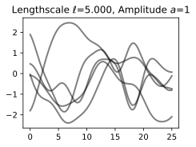

Mathematical Foundations of AI & ML
Unit 12: Uncertainty in Predictions


Recall: aleatory vs epistemic uncertainty (Unit 7)
- Aleatory: inherent noise in the data-generating process — irreducible.
- Epistemic: uncertainty from limited data or model capacity — reducible.
- A complete UQ framework must quantify and distinguish both types.
- As training data grows, epistemic uncertainty should shrink; aleatory uncertainty should not.

The Bayesian predictive distribution
- Instead of predicting with a single \(\hat{\theta}\), integrate over all plausible \(\theta\):
\[ p(\mathbf{y}^* | \mathbf{x}^*, \mathcal{D}) = \int p(\mathbf{y}^* | \mathbf{x}^*, \theta) \, p(\theta | \mathcal{D}) \, d\theta \]
- This accounts for parameter uncertainty — the full posterior contributes to the prediction.
- The result is a distribution over predictions, not a single point.
- As data increases (1 → 2 → 20 obs.), the predictive band narrows.

Evidence as automatic Occam’s razor
- Simple model \(\mathcal{M}_1\): prior concentrated on few parameter values → high evidence if data is simple.
- Complex model \(\mathcal{M}_3\): prior spread thinly over many parameters → lower evidence unless data demands complexity.
- Just-right model \(\mathcal{M}_2\): highest evidence at observed \(\mathcal{D}_0\).
- The evidence automatically penalizes unnecessary complexity — no need for explicit regularization.

Model comparison via evidence
- Bayes factor: \(\frac{p(\mathcal{M}_1 | \mathcal{D})}{p(\mathcal{M}_2 | \mathcal{D})} = \frac{p(\mathcal{D} | \mathcal{M}_1)}{p(\mathcal{D} | \mathcal{M}_2)} \cdot \frac{p(\mathcal{M}_1)}{p(\mathcal{M}_2)}\).
- With equal model priors: the model with higher evidence is preferred.
- Unlike cross-validation, this uses all the data for both fitting and evaluation.
- Evidence selects \(d{=}1\) (linear) over \(d{=}2,3\) for small \(N{=}5\); at \(N{=}30\) it correctly selects \(d{=}2\).

From weight space to function space
- Any linear-in-parameters model with a Gaussian prior on the weights is a GP:
\[ f(\mathbf{x}) = \mathbf{w}^\top \boldsymbol{\phi}(\mathbf{x}), \quad \mathbf{w} \sim \mathcal{N}(\mathbf{u}, \mathbf{S}) \;\Rightarrow\; f \sim \mathcal{GP}(m, k) \]
\[ m(\mathbf{x}) = \mathbf{u}^\top \boldsymbol{\phi}(\mathbf{x}), \qquad k(\mathbf{x}, \mathbf{x}') = \boldsymbol{\phi}(\mathbf{x})^\top \mathbf{S} \, \boldsymbol{\phi}(\mathbf{x}') \]
- Example: \(f(x) = w_0 + w_1 x\) with \(w_0, w_1 \sim \mathcal{N}(0,1)\) gives \(m(x) = 0\), \(k(x,x') = 1 + xx'\).
- Bayesian linear regression (Unit’s prerequisite!) is a GP with the linear kernel.

GP posterior: conditioning on data
- Observe \(\mathcal{D} = \{(\mathbf{x}_i, y_i)\}_{i=1}^N\) with \(y_i = f(\mathbf{x}_i) + \epsilon\), \(\epsilon \sim \mathcal{N}(0, \sigma_n^2)\).
- The posterior \(f | \mathcal{D}\) is also a GP with updated mean and covariance.
- The posterior passes through (or near) the training points.
- Away from data, the posterior reverts to the prior.

GP uncertainty bands
- Plot \(\boldsymbol{\mu}(\mathbf{x}) \pm 2\sigma(\mathbf{x})\): the 95% credible band.
- Bands are narrow near observed data (confident predictions).
- Bands widen away from data (uncertain predictions).
- This is honest uncertainty — the GP admits what it does not know.

GP hyperparameter learning
- Optimize kernel hyperparameters \(\ell, \sigma_f, \sigma_n\) by maximizing the log marginal likelihood:
\[ \log p(\mathbf{y} | \mathbf{X}) = -\frac{1}{2}\mathbf{y}^\top(\mathbf{K} + \sigma_n^2 \mathbf{I})^{-1}\mathbf{y} - \frac{1}{2}\log|\mathbf{K} + \sigma_n^2 \mathbf{I}| - \frac{N}{2}\log 2\pi \]
- Three terms: data fit, complexity penalty, normalization.
- Gradient-based optimization (L-BFGS is common).

Length scale effect
- Short \(\ell\): wiggly functions, fits local patterns (and possibly noise).
- Long \(\ell\): smooth functions, captures global trends (may miss local structure).
- Optimal \(\ell\): balances data fit and smoothness — determined by marginal likelihood.
- Same 20 noisy training points; three different \(\ell\) choices give very different posteriors.

Length scale effect: prior and posterior samples
Short \(\ell = 0.1\)
Prior

Short \(\ell = 0.1\)
Posterior

Long \(\ell = 5\)
Prior

Long \(\ell = 5\)
Posterior

- Top: prior samples. Bottom: posterior samples on the same data.
- Short \(\ell\): function values decorrelate within tiny gaps → wiggly draws, bands re-inflate between every pair of points.
- Long \(\ell\): strong long-range correlation → smooth draws, narrow bands — confident even far from data (possibly overconfident).
Mixture-Density Networks (MDNs)
- A standard NN outputs a single \(\hat{\mathbf{y}}\) (or \(\hat{y}\)). An MDN outputs parameters of a mixture of Gaussians:
\[ p(\mathbf{y}|\mathbf{x}) = \sum_{k=1}^{K} \pi_k(\mathbf{x}) \, \mathcal{N}(\mathbf{y} | \boldsymbol{\mu}_k(\mathbf{x}), \sigma_k^2(\mathbf{x})) \]
- The network predicts mixing coefficients \(\omega\), means \(\mu\), and variances \(\sigma\) — all functions of input \(\mathbf{x}\) (Neuer et al. 2024).

Stochastic enrichment
- Add noise to inputs during prediction: \(\tilde{\mathbf{x}} = \mathbf{x} + \boldsymbol{\epsilon}\), \(\boldsymbol{\epsilon} \sim \mathcal{N}(\mathbf{0}, \boldsymbol{\Sigma}_\epsilon)\).
- Run multiple predictions with different noise realizations.
- High variance across perturbed predictions = model is sensitive = high uncertainty.
- Matches real-world measurement noise propagation (Neuer et al. 2024).

Calibration: are uncertainties trustworthy?
- A model is well-calibrated if predicted \(p\)% confidence intervals contain \(p\)% of test points.
- Calibration plot: predicted confidence level vs observed coverage.
- Perfect calibration = diagonal line.
- Overconfident: intervals too narrow (common in NNs). Underconfident: intervals too wide.
- Modern deep NNs are systematically overconfident — confidence exceeds accuracy (Guo et al. 2017).